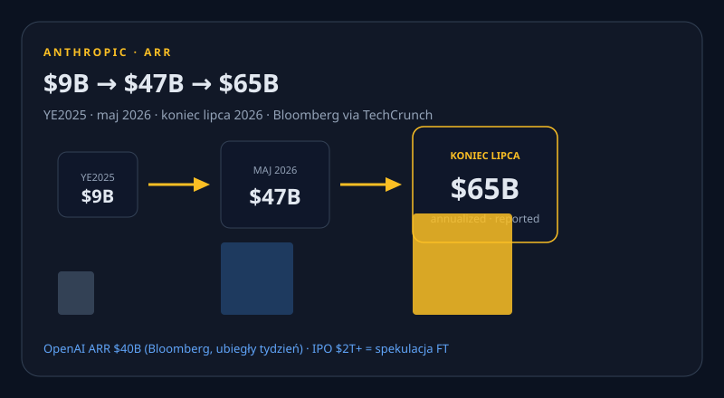

OpenAI wchodzi do PORTS-Pike. Anthropic ARR $65B. Claude Code 2.1.234.
Nowe vs wczoraj: umowa Ohio podpisana (nie „rozmowy”), ARR Anthropic $65B, Groq $350M, Higgsfield $400M, Amazon books, Origin, Peeko KS, pozew Round Hill, Claude Code 2.1.234. X: 402 credits.

OpenAI, NVIDIA i SB Energy podpisują PORTS-Pike
SIGNED OpenAI: ~8 GW-IT, Pike County, Ohio. SB Energy buduje/posiada/operuje, 20-letni lease. NVIDIA exclusive DSX. 35 000 miejsc budowlanych do 2032, 2 500 operacyjnych. $40M community fund + $84M Codex credits. Pierwsze 800 MW expected 2028 (statement OpenAI).
8-K NVIDIA: residual-value guaranties na 4,25 GW-IT, opcja ~3,8 GW, cap $105B. NVIDIA $1,5B w SB Energy. Fazy 2028–2030. OpenAI płaci lease.


Produkty i modele
Claude Code 2.1.234
NOWE Auto-continue po limicie claude.ai, GitLab MR badge, NT-path hardening, skill claude-api 200k→25k.
OpenRouter Sol −50%
NOWE Promo tylko OpenRouter, nie native API. HN 373.
ABC Legal × Managed Agents
NOWE 50+ agentów w prod, ~310 daily users. Metryki customer-reported.
Watermark = SynthID-Text
FOLLOW-UP Verge 17.08, ogłoszenie Anthropic 14.08 — nie premiery.
Laby i research
The Defender’s Window
NOWE Brockman 17.08: HF incident = watershed. 10-step playbook.
$1M + $1M API policy
NOWE 14 projektów, wyniki 2027. ChatGPT 1B users = claim firmy.
Hanover Institute
REPORTED Fake think tank do zatruwania LLM-ów. Reporting, nie sąd. HN 377.
Wiz Red Agent
NOWE Injection w Snowflake GH Actions. Copilot Autofix nie złapał. HN 356.
Biznes
Anthropic ARR >$65B
NOWE Bloomberg via TC. Maj $47B, YE2025 $9B. SPEKULACJA IPO $2T+ (FT).
Groq $350M
NOWE Wycena $3,5B, pivot neocloud. Nvidia w rundzie.
Round Hill vs Anthropic + Suno
NOWE ND Cal 5:26-cv-08505. Zarzut, nie wyrok.
Higgsfield $400M + Relay + Amazon
NOWE Higgsfield $5,4B. Relay gasi 14.09, Bank → Chrome. 404 Media: AirTag → LAS8/VGT3.
Narzędzia + OSS
Speko + Origin + PH
NOWE Launch HN Speko. Cursor Origin 17.08 + GitHub outage ~6h42m. upvote0: Meridian, Omni, Treg. DuckDB 2.0 HN 609.
Speko HN Speko Origin GitHub Status upvote0 Meridian Omni Treg DuckDB
AI;DR + trending
TREND HN 814. strix, ai-memory, llmfit.
Gadżety
Peeko — NEW KS 17.08
CROWDFUNDING 7" AI tablet dzieci 3–12, bez recurring AI sub. Nie shipping.
Lumi + CtrlVibe
CROWDFUNDING Lumi XYZ dock (do 4.09). CtrlVibe macropad (do 13.09).
Sygnały X + Reddit + HN
X HOLE Konektor user-X połączony. search/timeline/posts: 402 credits depleted. search_posts_all 403. Nie scrapowaliśmy X przez Chrome. Reddit 403.
X z HN: OpenRouter 2089416739398254662. HN: AI;DR 814 · DuckDB 609 · think tank 377 · Sol 373 · Wiz 356 · Speko 100 · Ask HN GitHub 575.
Co warto dziś sprawdzić
3 tweets ready to post
https://openai.com/index/openai-joins-ports-pike-project/
https://techcrunch.com/2026/08/17/anthropics-annualized-revenue-surges-to-65b/
https://github.com/anthropics/claude-code/releases/tag/v2.1.234